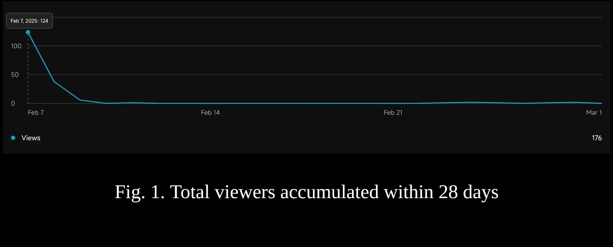
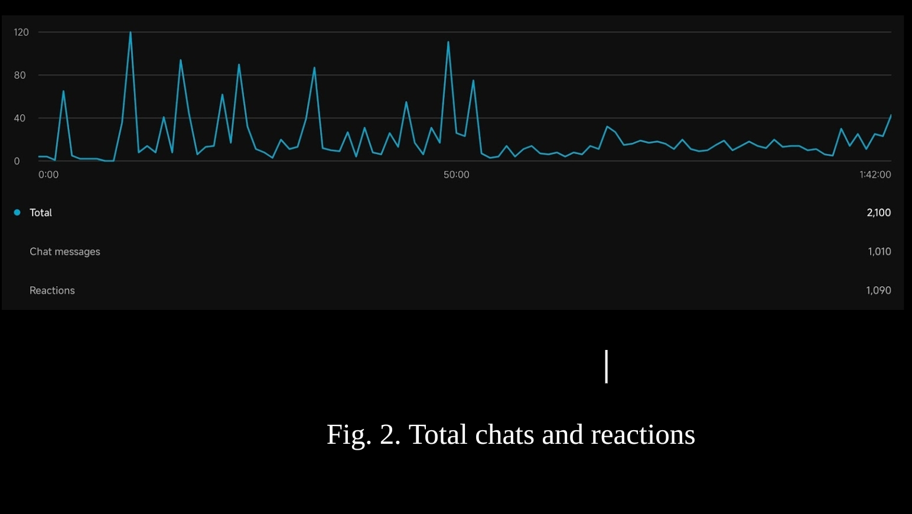
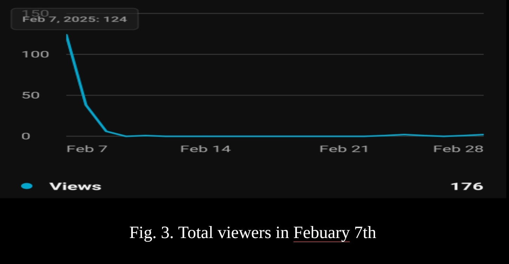
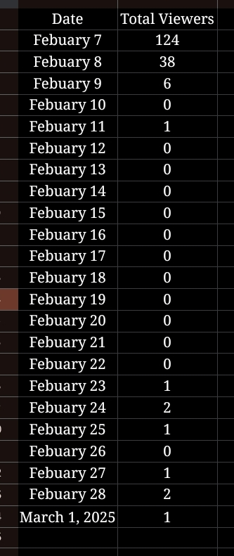

The New Epoch of Epistemology and Knowledge | Group 6
Our First Livestream
Stream Analysis of Our First Livestream
Summary of Stream
The stream started by presenting a waiting screen for 10 minutes along with entertaining music for the viewers to be entertained and for others to have time to join. Once the waiting screen is over, the hosts of the stream are now presented. The hosts greeted the audience warmly and made their introduction. Furthermore, the host introduced 3 special guests from other streams, Reese Velasco, Anna Toralbala, and Sofia Abilar.
After the introduction, the first Challenge Activity was introduced called Story Ch-AI-n. In this activity, the players(hosts & guests) worked together to create a startup story. The story would then be continued by another special guest, ChatGPT. The players and ChatGPT took turns creating a very weird yet fun story until the host finally ended it. After the first Challenge Activity, the hosts started to talk about their observations along with the guests on how ChatGPT adjusted to the complex flow of the story. Afterwards, the next Challenge Activity is introduced called Imposter.
The hosts of the challenge are Louisse and Earl. They made every player blindfolded or cover themselves with something and instructed them on how the challenge was played. One of the hosts would then choose a player who would become the impostor or the person who would be using ChatGPT for this challenge.
The host would then start to ask a question. Players are given time to think while the imposter uses Chatgpt for his/her answer. After the players answered the question they would now vote who they think the imposter is and should be voted out. There were some arguments in the scene but eventually, the players identified who the imposter was.
It took a few sets of the activity before it finally ended. The hosts and guests would again talk about their observations about the activity before moving on to the closing remarks. The guests gave their final say by promoting their stream, and lastly, the hosts said their goodbyes before finally ending the stream.
Things that went well during stream
The stream went according to the written stream outline—all were done under the given time allocated for each of them. The stream participants and host completed the activity Story Ch-AI-n and finished their objectives, which is finishing the story—even though the story was chaotic and incomprehensible to some of the viewers, itt was still fun for those who participated in it.
However the activity had some confusion from both of the viewers and participants due to the weird world building of the story, and there were awkward pauses, which doesn't entail it was eThe stream went according to the written stream outline—all were done under the given time allocated for each of them. The stream participants and host completed the activity Story Ch-AI-n and finished their objectives, which is finishing the story—even though the story was chaotic and incomprehensible to some of the viewers, itt was still fun for those who participated in it.
However the activity had some confusion from both of the viewers and participants due to the weird world building of the story, and there were awkward pauses, which doesn't entail it was entirely engaging.
The activity did show some value, as it reflects how generative artificial intelligence adapts to odd story flows created by the participants.
The activity Imposter was by far the most well done in cohowever it is with utmost confidence that the second activity had the better results, streamers were also able to shout out some of the viewers and started and respectably ended their stream.
Stream’s Areas of Opportunities
Increasing audience interaction can make the stream more engaging by incorporating live polls, Q & A sessions and interactive suggestions ensuring viewers feel more involved. Improving game clarity is also essential by providing clear instructions and using visual cues to help both participants and viewers understand the activities easily.
Managing conflicts better through a designated moderator or structured resolution methods can ensure disagreements are handled smoothly maintaining a positive. Balancing speaking time is another area for improvement as ensuring all participants get a fair chance to contribute makes discussions more inclusive and engaging.
Enhancing visuals and technology, such as upgrading overlays transitions, and sound quality will create a more polished and professional-looking stream. Lastly, boosting promotion through increased pre-event marketing including teaser countdowns and pre-stream challenges, can help attract a larger audience. These improvements will make future streams smoother, more engaging and enjoyable for everyone.
Stream’s Level of Engagement
The stream had a high click-through rate, a respectable number of impressions, and a respectable degree of engagement. This suggests that viewers were successfully drawn in by the title, thumbnail, and presentation as a whole. Even while some viewers continued to participate in the discussion, the amount of interaction varied throughout the stream, with certain parts generating more than others.
Although many people clicked on the stream, not all of them stayed for the entire length, based on the average viewing time. The content layout, tempo, or slow points in interaction could all be to blame for this decline. Interest could be sustained by promoting more active audience participation in real time, such as through interactive features or Q&A sessions.
The stream demonstrated its potential for growth by gaining more awareness and new subscribers in spite of these obstacles. Longer viewer engagement and a more participatory experience could be achieved by streamlining the information, improving the graphics, and adding more interesting conversations.
Viewership of Stream
Before the stream started, there was a set goal of reaching at least 30-50 viewers, as anything more than that would be quite difficult to achieve. Though it was proven wrong. After the YouTube livestream on February 7, 2025, the live stream received 177 views. This viewership is considered high, as it exceeded expectations. However, when compared to the views of other groups, it would be regarded as low. There’s a few factors that could possibly influence viewership, such as promotion, level of engagement, content type, topic, and timing and schedule.
During the promotion stage, there was a full week dedicated to advertising the YouTube channel before live streaming. The channel was advertised to the class, to peers, and family. In the Facebook page there were three promotional posters posted, each with unique and catching captions. After all that, the channel received a total of 45 subscribers in that given time, which is a good amount of subscribers.
The level of engagement the live stream reached was a good amount as well. As previously mentioned in the 4th section of this paper, “The stream had a high click-through rate, a respectable number of impressions, and a respectable degree of engagement.” The channel received a lot of support as it went live for the first time, earning about 1,010 chat messages and 1,090 reactions in total.
The content type presented in this live stream was distinct compared to that of other groups, many of whom primarily used a podcast-style format focused on discussing their topics. In contrast, the challenge-based activity offered a more interactive and engaging approach, which may have provided a refreshing change for viewers. This content type not only shows entertainment but also effectively shows lessons related to the topic, making it both informative and engaging.
The chosen topic, artificial intelligence, is both relevant and interesting, especially since it's becoming a bigger part of life. Its impact on different fields makes it a great subject to explore and discuss.
The timing of the live stream was planned to match the target audience's availability. It was scheduled for a Saturday afternoon to avoid conflicts with classes, giving students more free time to watch.
So in conclusion, the YouTube live stream was a success in terms of viewership, engagement, and content delivery. While some may consider the total views low compared to other groups, it has exceeded the initial goal of 30-50 viewers, reaching 177 views over time. The promotional efforts, interactive content, and well-planned schedule all contributed to this achievement. To add, the high level of engagement with over 1,000 chat messages and reactions, shows how active the audience was. Overall, the stream was a success and proved that a unique and engaging approach can make a big impact.
Appendix
Appendix A: Graphs
Fig. 1. Total viewers accumulated within 28 days

Fig. 2. Total chats and reactions

Fig. 3. Total viewers in Febuary 7th

Appendix B: Table and data
Table 1. Viewership progress table (Feb 7- Mar 1)

Total of 177 views within 23 days
Table 2. Major days of accumulated and lost subcribers